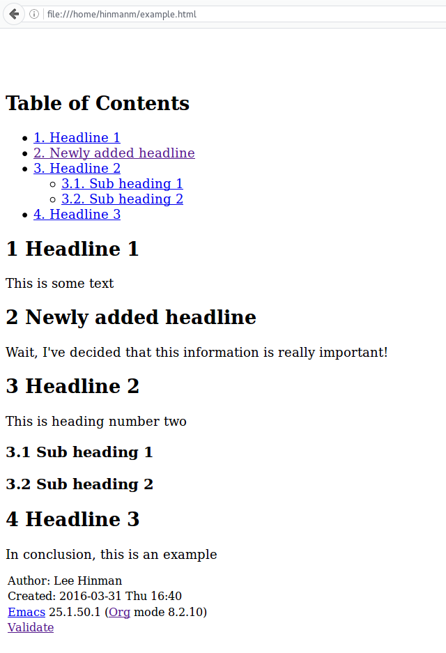

Emacs Org-mode: Use good header ids!
Table of Contents
| Author | Lee Hinman (lee@writequit.org) |
| Date | 2017-07-24 16:42:01 |
Introduction
I frequently write many articles in org-mode, some private, some public. Most of the public ones eventually end up published on my site as HTML documents, to be shared with co-workers or anyone who happens to be browsing my site. Recently, however, I've noticed that many org documents that are exported to HTML are using a concerning method of anchoring links to different headlines.
The Problem - anchors are not consistent
Let's take an example.org document, the simplest example of a an org-mode
buffer with just a few headlines:
* Headline 1
This is some text
* Headline 2
This is heading number two
** Sub heading 1
** Sub heading 2
* Headline 3
In conclusion, this is an example
Now, if you invoke C-c C-e to bring up the export options and export this
document to HTML, you'll end up with a document that looks something like this:

Currently this is at the file:///home/hinmanm/example.html url. In the table
of contents, if you click on the Headline 2 heading, you are then taken to the
file:///home/hinmanm/example.html#sec-2 and jump to that location on the page
(imagine the page is longer so you would jump to the location).
The issue with this is when we edit our example.org file to add a headline
somewhere in the middle, in this case, adding a "Newly added headline" in
between "Headline 1" and "Headline 2".
* Headline 1
This is some text
* Newly added headline
Wait, I've decided that this information is really important!
* Headline 2
This is heading number two
** Sub heading 1
** Sub heading 2
* Headline 3
In conclusion, this is an example
If this is again exported to HTML, we get:

But wait! Notice that the previously visited HTML anchor #sec-2 now points to
the "Newly added headline" headline, instead of "Headline 2" like it used to!
This is a problem for any public HTML document where someone may keep a link to
a sub heading, or send the heading to another person. As the number of headlines
increases, the chance of inserting a headline and messing up the anchors
increases. So, how can you handle this?
The Solution - use custom ids in headline properties
Org-mode has property drawers for properties that apply to headlines, and we can
assign a custom ID to a headline by setting the CUSTOM_ID property, so if we
do that to the "Headline 2" heading, you can see:
* Headline 1
This is some text
* Newly added headline
Wait, I've decided that this information is really important!
* Headline 2
:PROPERTIES:
:CUSTOM_ID: my-headline-2
:END:
This is heading number two
** Sub heading 1
** Sub heading 2
* Headline 3
In conclusion, this is an example
When this org document is exported to HTML, instead of using #sec-2 as the
anchor, the value of the CUSTOM_ID will be used instead. This means the full
link will be file:///home/hinmanm/example.html#my-headline-2, no matter how
many headings you insert before or after the heading. You can also give the
anchor a much more human-friendly name instead of a section number.
Automating adding the CUSTOM_ID
Fantastic! You may say, the only issue is that now I have to go through and manually add these custom ids! Well, fear not, because there is some elisp that can do this easily for you:
First, you'll need to require the org-id library, which has some helpers for
this. You may also want to use your CUSTOM_ID for links also:
(require 'org-id)
(setq org-id-link-to-org-use-id 'create-if-interactive-and-no-custom-id)
Then we can define our own version of org-custom-id-get that calls
org-id-new and creates a new property if one doesn't already exist
In case you were wondering what the "h" is for, the ids that org-id-new
generates by default are actually invalid XHTML anchors (because they start with
a number instead of a character), so this changes them to start with "h".
.
(defun eos/org-custom-id-get (&optional pom create prefix)
"Get the CUSTOM_ID property of the entry at point-or-marker POM.
If POM is nil, refer to the entry at point. If the entry does
not have an CUSTOM_ID, the function returns nil. However, when
CREATE is non nil, create a CUSTOM_ID if none is present
already. PREFIX will be passed through to `org-id-new'. In any
case, the CUSTOM_ID of the entry is returned."
(interactive)
(org-with-point-at pom
(let ((id (org-entry-get nil "CUSTOM_ID")))
(cond
((and id (stringp id) (string-match "\\S-" id))
id)
(create
(setq id (org-id-new (concat prefix "h")))
(org-entry-put pom "CUSTOM_ID" id)
(org-id-add-location id (buffer-file-name (buffer-base-buffer)))
id)))))
And add a helper function that's interactive to add custom ids to all headlines in the buffer if they don't already have one.
(defun eos/org-add-ids-to-headlines-in-file ()
"Add CUSTOM_ID properties to all headlines in the
current file which do not already have one."
(interactive)
(org-map-entries (lambda () (eos/org-custom-id-get (point) 'create))))
Now to add headlines, you can hit M-x eos/org-add-ids-to-headlines-in-file and
you'll get something like this!
* Headline 1
:PROPERTIES:
:CUSTOM_ID: h:7d66adcc-5e24-4f49-9923-4816bc30a7cb
:END:
This is some text
* Newly added headline
:PROPERTIES:
:CUSTOM_ID: h:7c38f8ef-0c8c-4f17-a7da-7ed7d5eedeff
:END:
Wait, I've decided that this information is really important!
* Headline 2
:PROPERTIES:
:CUSTOM_ID: my-headline-2
:END:
This is heading number two
** Sub heading 1
:PROPERTIES:
:CUSTOM_ID: h:2c29be2d-be83-46d3-bee8-bcbe75e4160b
:END:
** Sub heading 2
:PROPERTIES:
:CUSTOM_ID: h:e148d5ed-8e55-4e26-bd5a-c414ed06fa5a
:END:
* Headline 3
:PROPERTIES:
:CUSTOM_ID: h:a1b44d60-488a-4aae-8ae4-6b98d5dbef7e
:END:
In conclusion, this is an example
(It looks better when the :PROPERTIES: drawers are collapsed of course). If
you decide you want to add a nicer-looking CUSTOM_ID instead of the UUID, you
can hit C-c C-x p and be prompted to change the property.
Finally, if you so desire, here is an optional helper if you want to add a
CUSTOM_ID to headlines created when you use an org-capture template:
;; automatically add ids to captured headlines
(add-hook 'org-capture-prepare-finalize-hook
(lambda () (eos/org-custom-id-get (point) 'create)))
Now go forth and make anchor links that don't break!
Update 2016-09-07
I've updated the eos/org-add-ids-to-headlines-in-file method to check for the
string #+OPTIONS: auto-id:t in the file somewhere (usually at the top) and
automatically add ids when the file is saved. The new version looks like:
(defun eos/org-add-ids-to-headlines-in-file ()
"Add CUSTOM_ID properties to all headlines in the current
file which do not already have one. Only adds ids if the
`auto-id' option is set to `t' in the file somewhere. ie,
#+OPTIONS: auto-id:t"
(interactive)
(save-excursion
(widen)
(goto-char (point-min))
(when (re-search-forward "^#\\+OPTIONS:.*auto-id:t" (point-max) t)
(org-map-entries (lambda () (eos/org-custom-id-get (point) 'create))))))
And then it's automaticallyRunning it automatically is up to you, I find it easy to leave the hook in and add the option when I am intending to publish the HTML publicly somewhere run with:
;; automatically add ids to saved org-mode headlines
(add-hook 'org-mode-hook
(lambda ()
(add-hook 'before-save-hook
(lambda ()
(when (and (eq major-mode 'org-mode)
(eq buffer-read-only nil))
(eos/org-add-ids-to-headlines-in-file))))))
Update 2017-07-24
I got a nice email from a fellow who mentioned that an id like h:1234 breaks jquery trying to
select that particular heading. So in order to fix that, do the following:
(defun org-id-new (&optional prefix)
"Create a new globally unique ID.
An ID consists of two parts separated by a colon:
- a prefix
- a unique part that will be created according to `org-id-method'.
PREFIX can specify the prefix, the default is given by the variable
`org-id-prefix'. However, if PREFIX is the symbol `none', don't use any
prefix even if `org-id-prefix' specifies one.
So a typical ID could look like \"Org-4nd91V40HI\"."
(let* ((prefix (if (eq prefix 'none)
""
(concat (or prefix org-id-prefix) "-")))
unique)
(if (equal prefix "-") (setq prefix ""))
(cond
((memq org-id-method '(uuidgen uuid))
(setq unique (org-trim (shell-command-to-string org-id-uuid-program)))
(unless (org-uuidgen-p unique)
(setq unique (org-id-uuid))))
((eq org-id-method 'org)
(let* ((etime (org-reverse-string (org-id-time-to-b36)))
(postfix (if org-id-include-domain
(progn
(require 'message)
(concat "@" (message-make-fqdn))))))
(setq unique (concat etime postfix))))
(t (error "Invalid `org-id-method'")))
(concat prefix unique)))
This changes the header delimiter from : to - so h-1234 is generated instead.